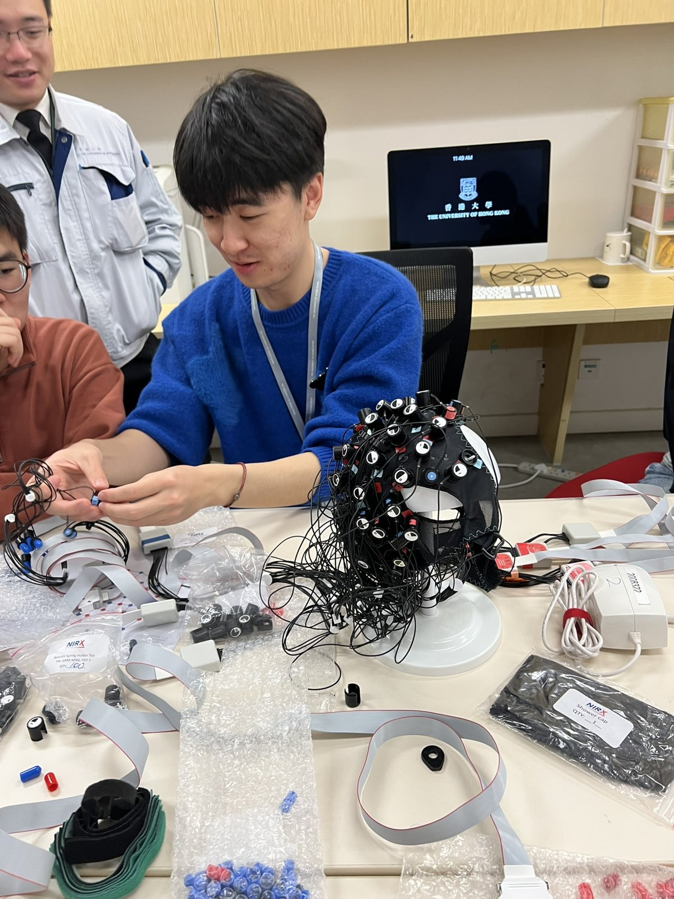

For researchers & collaborators
Technical detail on our equipment, methods, and analysis, for colleagues considering collaboration or comparing setups. Lab members: the equipment scheduler is linked below.
Five NIRSport2 systems, usable individually or synchronized for hyperscanning up to five participants. Kits are reserved as bundles — unit, source and detector bundles, headband, cap, and acquisition laptop — through the lab's own scheduling tool.

Methods & analysis
Acquisition
Continuous-wave fNIRS at 760/850 nm via NIRx Aurora. Montages are designed per study; we run full-head caps for language and semantic work and compact prefrontal headband arrays for field settings where setup time and heat matter. Short-separation channels are used where the montage allows.
Hyperscanning
Multi-unit recordings are synchronized over a local wireless network with hardware triggers. Our largest configuration to date is five simultaneous participants (one speaker, four listeners) at live storytelling events. We compute interpersonal neural synchrony with wavelet transform coherence and have an in-house MATLAB pipeline for dyadic and group analyses.
Preprocessing
Motion correction, bandpass filtering, and conversion to HbO/HbR via the modified Beer–Lambert law, in MATLAB (Homer-style workflows) and Python (MNE-NIRS). Session management and exports follow BIDS conventions.
Field work
We have collected data in rural Ecuador with battery power and no internet, and are happy to share what we learned about heat, hair, consent processes, and logistics. See the NIRx webinar on the publications page.